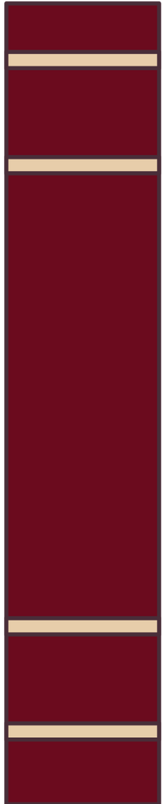
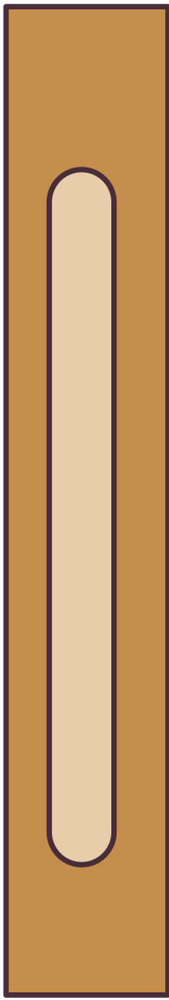
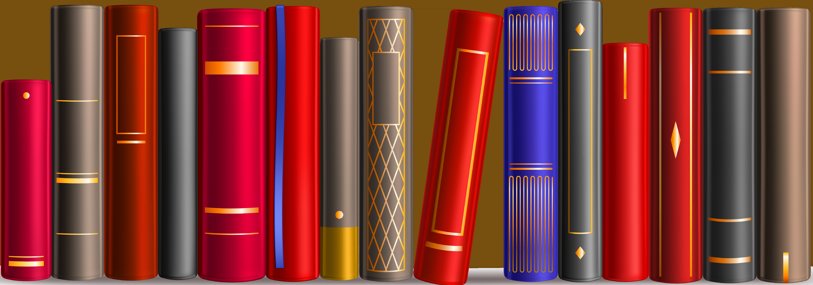
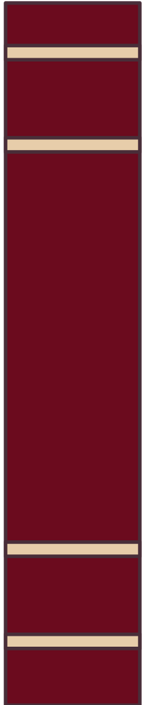
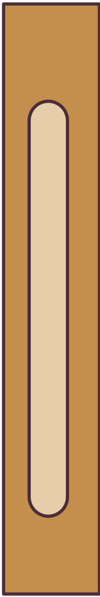
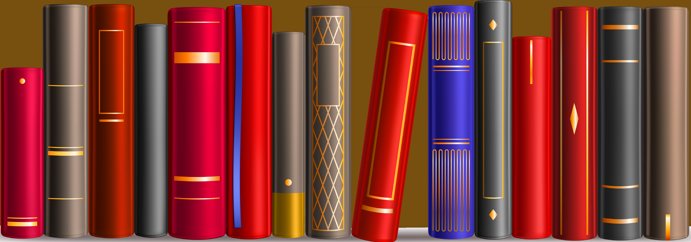

Ecologia y Educacion Ambiental
Descripción del libro: Un libro diseñado y creado para la reforma de educación ambiental. En este se nos presenta la naturaleza de una forma bella, de como debemos de apreciar esos seres vivos, pues cada uno es muy bello.
Descargar PDFTe Cuento mi Ambiente
Descripción del libro:Este es un libro que incluye diversos cuentos. No solo infantiles. Este incluye tres apartados, el “A”, diseñado para niños de 6 a 9 años como el “B” el cuál está diseñado para para niños de 9 años, como para jóvenes de 12 años. El ultimo grupo es el “C”, este siendo para jóvenes de 12 a 15 años. El libro presenta diversos cuentos ilustrando distintos problemas ecológicos, con imágenes ilustrativas y una buena redacción.
Descargar PDF
Medio Ambiente y Desarrollo
Descripción del libro:Esta lectura nos presenta diversos puntos de interés, tales como; La temática “Medio ambiente y Desarrollo”, La “Teoría Ecológica” o La revolución de “Mayo del 68”. Este también nos muestra el nacimiento de distintas ramas por los resultados del desarrollo industrial, tales como; El ecologismo.
Descargar PDF
Fundamentos De Ecologia y Ambiente
Descripción del libro:Este libro, dicho por sus mismos autores. Es un buen libro para quienes estén empezando en temas ecológicos y el ambiente así mismo, explica los inicios de esta misma desde 1973. Y como este en sus inicios era de interés político como social.
Descargar PDF
El libro del reciclaje
Descripción del libro:Este libro es perfecto para quienes no saben o tienen conocimientos básicos sobre el reciclaje de residuos ósea basura orgánica e inorgánica. Este libro también explica que son los residuos, clases y que tanto contaminan, yendo desde una simple botella, hasta cantidades grandes de basura. Así mismo dándonos ejemplos de cómo separar, reciclar y usar la basura si es que esta puede ser reciclada. Como ejemplos; Llantas viejas echas macetas para brotes de árboles, botellas de agua que pueden ser convertidos en carros con sus mismas tapas, etc.
Descargar PDF